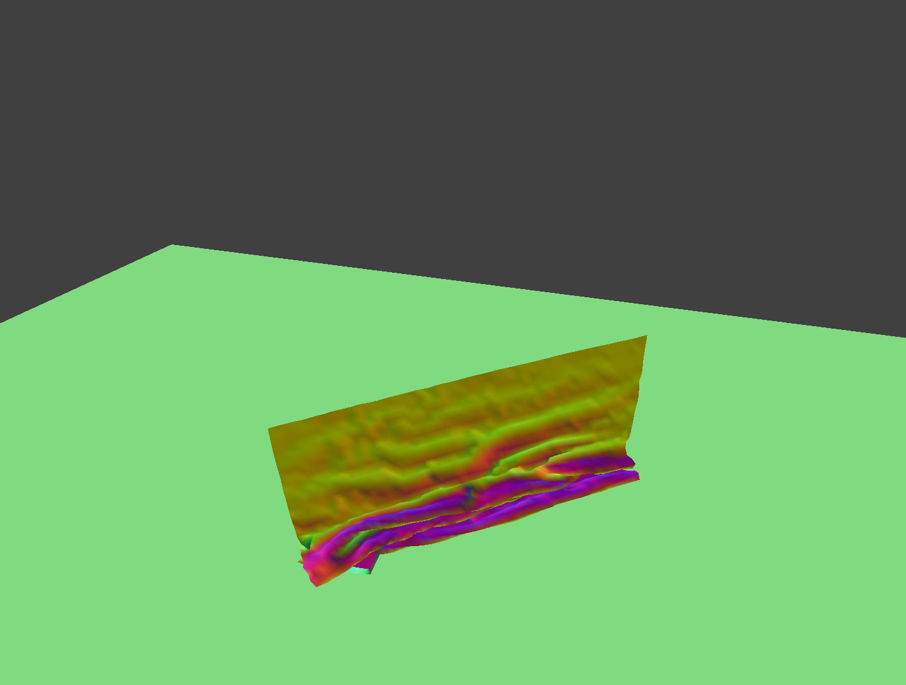
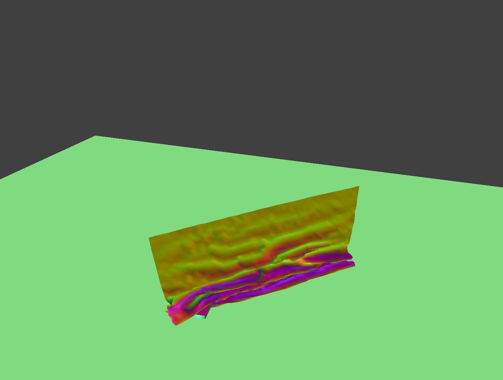
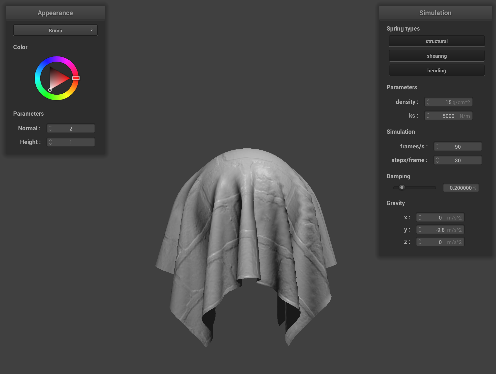
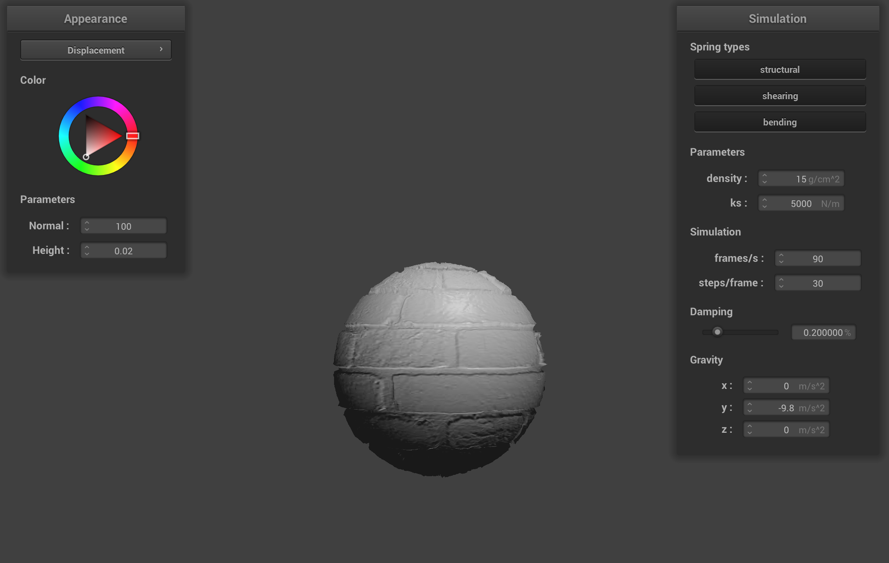

CS184 Project 4
Matthew Tang, Kaitlyn Lee
https://cal-cs184-student.github.io/sp22-project-webpages-kaitlynlee/proj4/index.html
Part 1
In Part 1, we implemented code to set up the masses and springs. We used a double for loop to set up the masses and pointer arithmetic to create the spring constraints. One problem we ran into was segmentation faults due to off by 1 access errors. We implemented 3 types of constraints: structural, shearing, and bending. The below image shows the top view of the wireframe with all constraints.
These images show what the wireframe looks like (1) without any shearing constraints, (2) with only shearing constraints, and (3) with all constraints.


Part 2
In Part 2, we computed the total force acting on each point mass and used verlet integration to compute new mass positions. We also made sure add a constraint such that the spring's length is at most 10% greater than its rest_length at the end of any time step.
Here is the final resting state of pinned4 and pinned2 respectively.
Setting the ks to be very low makes the cloth fall slower and droop more in its final resting state. There are more random jitters in the resting state. Setting the ks to be high makes the cloth fall faster and settle faster. The final resting state is more taut. (Setting the ks to be ridiculously high will produce a degenerate blob, but we assume that ks is not thaaat high.) The left photo shows a low ks and the right photo shows a high ks.

A low density also creates a similar taut resting state. A high density creates a very droopy resting state. The left photo shows a low density and the right photo shows a high density.


Low damping means it takes longer for the cloth to settle and it will swing back and forth. High damping means the cloth will take a long time to fall down and settle into its resting position as well. The below screenshots (low damping, high damping) were taken before they reached their resting positions.

Part 3
In Part 3, we implemented collisions with planes and spheres. For each point mass in our mesh, we checked for collisions with spheres by checking if distance from the point mass to the center of the sphere was less than the radius of the sphere. If it was, we applied a correction vector (scaled by friction) towards the tangent point (where the cloth should rest on the sphere if the collision point was moved in the same direction of the point mass - origin vector).
Similarly, for planes, we first checked if the point mass intersected with the plane using methods similar to those from the ray intersection tests. If there was an intersection, we applied a correction vector such that the point mass rested on the surface of the plane, along with a SURFACE_OFFSET. We did this by finding the ray from the point mass to the surface, as well as the parameter t, then applying that correction vector with t - SURFACE_OFFSET and scaling it by friction.
We can play around with different ks values for the sphere. The smaller the ks value, the more droopy it looks. The cloth conforms more to the surface of the sphere. The higher the ks value, the more taut it looks. The high ks value screenshot shows the cloth being very stiff and not conforming to the shape of the sphere very well. The default ks value is an inbetween of the two extremes.


Here is a screenshot of the cloth lying on the plane at rest.
Part 4
In part 4 we implemented self-collisions. We did this efficiently by spacially hashing each point mass for every single point in time, and then determining for each mass if it was too close to any other point masses by iterating through all the point masses in the same hash bucket and comparing the distances between them.
This reduced the complexity of checking for collisions from O(N^2) (for naively checking all masses) to O(N). After determining that there was a collision between two point masses, we computed a correction vector, moving the point mass until it was at least some distance away from the other mass. We then computed all such correction vectors for the point mass and moved the point mass by the average of the vectors, scaled down by the number of simulation steps.

 

Varying d and ks values
Low d (d = 1, ks = 5000)
Lowering d means that there are less masses representing our cloth mesh. This is reflected by how the folds resulting from the self-collision are much thicker than a cloth with higher d. The cloth almost seems bouncier.
high d (d = 30, ks = 5000)
Raising d means that there are more masses in our cloth mesh. This is reflected by how the folds resulting from the self-collision are much finer than a cloth with lower d. The cloth ends up with very fine creases. The fabric seems like one that has very fine fibers, like silk.

low ks (d = 15, ks = 100)
Lowering ks means we are lowering the spring constants of the springs connecting the masses in our cloth mesh. Lowering ks results in a cloth crumples very easily and doesn't maintain its shape well. As you can see, the cloth ends up in a resting state that has a lot of bumps, especially compared the other resting states.
High ks (d = 15, ks = 20000)
Raising ks means we are raising the spring constants of the springs connecting the masses in our cloth mesh. Raising ks results in a cloth that tends to want to maintain its shape after collision. As you can see, the cloth wrinkles are much thicker than when we had a low ks, and the cloth also comes to a much flatter resting state.


Part 5
A shader program is an isolated program that runs in parallel on a GPU while most of the other rendering computations are done on CPU.
Vertex shaders transform vertices by updating their position or normal vectors.
Fragment shaders compute a color from the position and normal vectors computed by the vertex shaders.
Both combined together can create the lighting effects we implemented in Project 3.
Blinn-Phong Shading model
Blinn Phong shading accounts for ambient lighting, diffuse reflection, and specular highlights.
Ambient lighting is shading that does not depend on anything. It is used to account for disregarded illumination and fill in black shadows. We treat this as a constant value.
Diffuse reflection is independent of viewing direction and gives the intrinsic color of the surface. We model this by multiplying the diffuse coefficient with the source illumination and the dot prodcut of the normal and the lighting direction.
Specular highlights are computed using a dot product of the normal and the bisector of the vector from the intersection point to source and intersection point to camera.
We add these three terms to get our final Blinn-Phong shading model.
Ambient Lighting only
Diffuse Reflection only
Specular highlights only
All put together
Custom Texture
Texture shading can be accomplished by just sampling from the 2D texture given a uv vector.
Bump Mapping vs Displacement Mapping
Bump Mapping
Displacement Mapping
In bump mapping, we modify the normal vectors of an object so that we give the illusion of detail on the surface. We use a given height map to calculate the local space normals as we traverse across a texture, and use this calculation to modify the original surface normals.
On the other hand, in displacement mapping, not only do we modify the surface normals, we also modify the position of the vertices in order to mimic texture on a surface. We do this by moving the vertices in the direction of our computed space normal vectors.
These two approaches result in different renders. While the bump mapping gives us the illusion of texture when looking straight on at a surface, the edges look very obviously smooth. For example, if the sphere were truly brick textured, we might expect see to have the ridges in the edge of the sphere, but it instead it looks smooth.
On the other hand, the displacement mapping does have those bumps and ridges in the surface itself. This lends it a more realistic look in this specific rendering.
Changing Mesh Coarseness
We varied the coarseness of the meshes using the flags -o 16 -a 16 (a coarse mesh) and -o 128 -a 128 (a fine mesh) and compared our two shader approaches. We noticed no difference for the bump mapping shader, but we did notice that the displacement mapping looking noticably smoother and more realistic with the finer mesh.
This is because for the bump mapping shader, we only modified the fragment shader, which is run on each pixel regardless of mesh coarseness. However, with displacement mapping we also modified the vertex shader. As we change the mesh coarseness, we also change the number of vertices on the sphere, which affects how finely grained our textures will appear.
Low Resolution (-o 16 -a 16)
Bump Mapping
Displacement Mapping
High Resolution (-o 128 -a 128)
Bump Mapping

Displacement Mapping

Mirror Shading
Mirror shading can be computed using the specular reflection formula given in lecture to get a wi, and then we can sample from the texture with the wi.